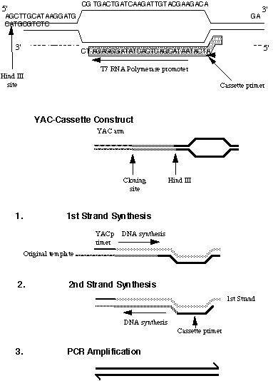

END-PROBE PREPARATION FROM YACS BY CASSETTE PCR
Zoe A. Wilson, Patrick J. Tighe, Janet Dawson & Bernard Mulligan
(Molecular Biology Group, Department of Life Science, University of
Nottingham, University Park, Nottingham, NG7 2RD, UK.)
* This method is broadly based upon vectorette PCR (Riley et al. 1990.
Nuc. Acid Res. 18, 2887-2890), which has been used for probe
preparation from human YACs. We have used this technique to
produce end-probes from the right arm of Arabidopsis YACs, and used
them for subsequent library screening and chromosome walking. It has
generally proved more reliable than IPCR, and has advantages over
IPCR since fewer manipulations are required and the incorporation of a
T7 RNA polymerase site means that RNA probes can be used for
subsequent screening.
1. CASSETTE CONSTRUCTION
* The cassette linker was made as follows:
(i) Top strand: 57 bp-4 bp overhang, 12 bp matched, 29 bp
mismatched, 12 bp matched.
(ii) Bottom strand: 53 bp-12 bp matched, 29 bp mismatched, 12 bp
matched.
(iii) The oligonucleotides are pooled in equal concentrations, heated to
94oC and left at rt to allow the matched sequences to anneal and form
the structure depicted below. Annealling the "cassette" results in a
linker with a Hind III site at one end and a blunt end at the other.
(iv) A 29 bp oligonucleotide was made to act as the cassette primer (see
sequence below). This is complimentary to the
3'---5' sequence which is generated by first strand synthesis from the "known"
primer, in this case the YAC arm sequence. This ensures that amplification must
utilise the YAC sequence primer.
(v) This is then ligated to the YAC to form the following:
2. PREPARATION OF DNA SAMPLES
(i) Prepare chromosome size DNA in plugs as detailed by Bancroft
elsewhere in Arabidopsis: The Compleat Guide.
(ii) Wash plugs in:
3 x TE (50oC, 30 min)
3 x TE (RT, 30 min)
1 x Hind III buffer (0oC,30 min)
(iii) Replace with fresh Hind III buffer and 60U Hind III, incubate o/n
37oC. (iv) Remove Hind III buffer and wash the plugs with 100ul 1 x
ligation buffer.
(v) Replace buffer with 100ul of fresh ligation buffer. Heat to 65oC (5-
15 min) to melt plug. Cool to 37oC and add rATP to 10mM, 20pM of
annealled cassette and 2U ligase (o/n; 16oC).
(vi) Dilute ligated sample with 400ul of dH2O.
3. AMPLIFICATION OF END-FRAGMENT
(i) Amplify in 100ul aliquots (10mM Tris-HCl, 1.5mM MgCl2, 50mM KCl,
0.1mgml-1 gelatine, pH 8.3; 0.2mM dNTPs; 5.0ul of diluted DNA
sample, 0.4mM each primer, 2.5U Taq DNA polymerase (Boehringer
Mannheim)) by 38 cycles of 94oC, 1min; 55oC, 2 min; 72oC, 3 min: 1
cycle 72oC, 10 min).
(ii) Analyse fragments by gel electrophoresis after digestion at the
cloning site and Hind III "cassette" site.
(iii) End-probes for library screening can be produced after removing
the YAC arm either by gel purification and random primer labelling, or by
riboprobe preparation from the T7 RNA polymerase site.
